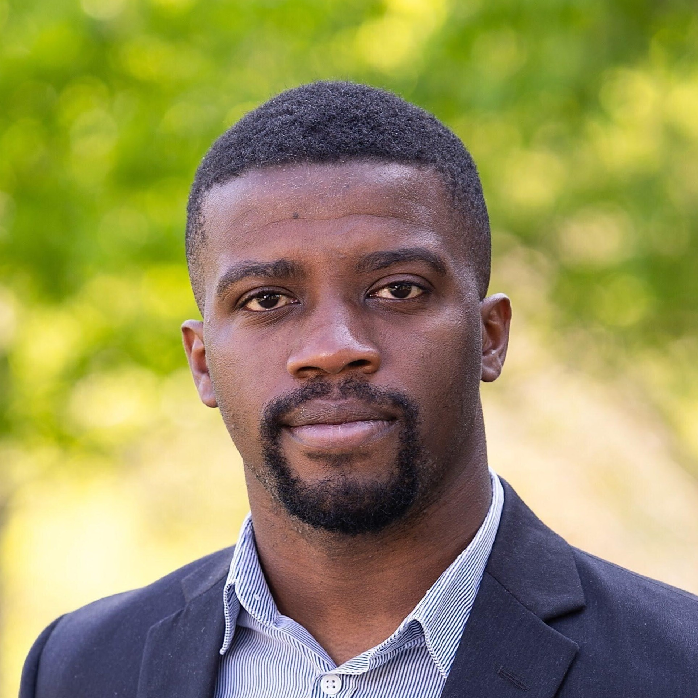
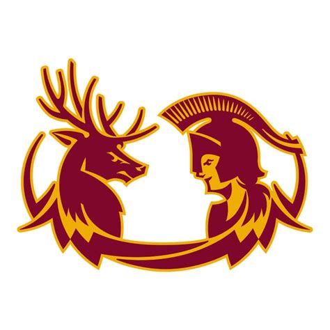
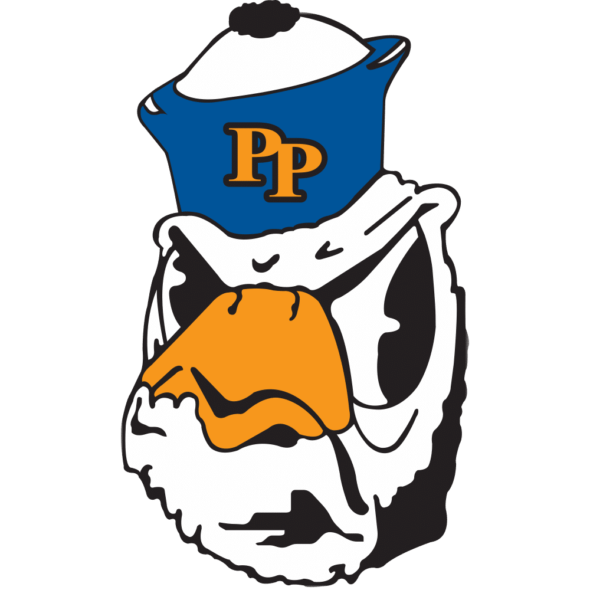

Our Team
Meet the fantastic scientists behind the work!

Akachukwu D. Obi, Ph.D.
Principal Investigator
Dr. Akachukwu (AC) Obi is an Assistant Professor of Integrated Sciences at Claremont McKenna College. He is excited about designing and synthesizing new main group materials for climate mitigation and energy storage, with emphasis on CO2 capture and hydrogen storage. Dr. Obi holds a B.S. and Ph.D. in Chemistry from Bates College and the University of Virginia, respectively, as well as an M.S. in Education from the University of Pennsylvania. He completed his postdoctoral fellowship at the Massachusetts Institute of Technology.
Current Members

Name
Undergraduate Researcher
Phosphorus ylides for CO2 capture

Name
Undergraduate Researcher
H2 fixation at s-block phosphine complexes
Name
Undergraduate Researcher
Magnesium-pnictinidene coordination chemistry
Interested in Joining?
We're always recruiting motivated students, researchers and collaborators. Students within the Claremont colleges consortium (5Cs), please complete this interest form. All other interested researchers, please reach out directly.
Contact Us